Unicode settings in osFinanacials5/TurboCASH5
Install osFinancials5/TurboCASH5 - Added Unicode Setting
We've adjusted the installation script to include a new Unicode setting for Unicode databases. This setting allows you to control the nounicode parameter in the osf.ini file during installation. Additionally, we've added options to update or retain the existing osf.ini file based on your Unicode preferences for your Unicode databases. This allows you to set the Unicode settings via the installation process without editing the osf.ini file in the osFinancials5 installation's root directory.
|
|
If you are using TurboCASH5, you may set the Unicode settings via the installation process without editing the tcash.ini file in the TurboCASH5 installation's root directory. |

Unicode Settings in osFinancials5/TurboCASH5
In osFinancials5, the osf.ini (or in TurboCASH the tcash.ini file) includes the setting nounicode=FALSE or nounicode=TRUE to control Unicode settings. Here's what these settings mean:
- Enable Unicode setting: nounicode=FALSE: This setting enables Unicode support. When Unicode is enabled, the software can handle a wide range of characters from different languages, ensuring proper display and processing of multilingual text.
- Disable Unicode setting: nounicode=TRUE: This setting disables Unicode support. When Unicode is disabled, the software may not correctly handle special characters or characters from languages other than the default one.
Enabling Unicode (nounicode=FALSE) is generally recommended if you need to work with multiple languages or special characters to ensure data integrity and proper functionality.
Unicode settings / System locale and Keyboard layout
When would that be necessary to use the nounicode=TRUE setting?
Disabling Unicode support with nounicode=TRUE may be necessary or beneficial in certain specific scenarios. Here are a few examples:
- Legacy Systems: If you are working with older, legacy systems or applications that do not support Unicode, disabling Unicode might be necessary to ensure compatibility. Some older software and databases were designed to work with specific code pages and might not handle Unicode characters correctly.
- Performance Considerations: In some cases, using non-Unicode (single-byte or multi-byte character encodings) can be more efficient in terms of storage and performance, particularly if all the text data falls within a single codepage or character set. Disabling Unicode could reduce the storage size and improve performance for certain operations.
- Specific Language Use: If you are working exclusively with a language or character set that is fully supported by the non-Unicode codepage, and there is no need to handle characters from multiple languages, you might choose to disable Unicode. This can simplify the configuration and maintenance of osFinancials5/TurboCASH5.
- Data Migration and Conversion: When migrating data from a non-Unicode system to a Unicode system, or vice versa, it might be necessary to temporarily disable Unicode support to ensure data integrity during the conversion process.
- Software Integration: If osFinancials5/TurboCASH5 needs to integrate with other software or systems that do not support Unicode, it might be necessary to disable Unicode to ensure proper data exchange and compatibility.
However, keep in mind that using nounicode=TRUE can lead to limitations in handling special characters and multilingual text. It's generally recommended to use Unicode (nounicode=FALSE) for better flexibility and accuracy in a modern, globalised context.
Ultimately, the decision to enable or disable Unicode support should be based on your specific requirements and the systems you are working with.
How does Unicode settings, System locale (language settings) and keyboard layout relate to these special characters?
Great question! The relationship between Unicode settings, system locale (language settings), and keyboard layout is crucial for typing and displaying special characters correctly. Here's how they interact:
- Unicode is a universal character encoding standard that assigns a unique code to every character, regardless of the platform, program, or language. It ensures that special characters like ê, ë, and Å are represented consistently across different systems and devices.
- System Locale (Language Settings) - System locale determines the language and regional settings for your operating system. It affects the default language for system messages, the date and time format, currency, and other regional preferences.
When you set your system locale to a specific language, it can also influence the availability and behaviour of certain characters and symbols in applications and text input.
- Keyboard layout defines the arrangement of keys on your keyboard and determines which characters appear when you press specific keys. Different languages and regions have their own keyboard layouts that include characters specific to those languages.
For example, if your keyboard layout is set to "US," you might not see characters like ê or ë directly on the keyboard. However, if you switch to a layout like "Afrikaans", "French" or "Dutch," these characters will be more accessible.
Many operating systems allow you to switch between different keyboard layouts, making it easier to type special characters. You can usually switch layouts via a keyboard shortcut or through the language settings in your system preferences.
- Putting It All Together
- Unicode ensures that the characters you type are represented correctly in text across different systems.
- System locale influences how these characters are displayed and interpreted based on your regional settings.
- Keyboard layout determines the ease of typing these characters by providing access to language-specific keys and shortcuts.
By configuring these settings appropriately, you can seamlessly type and display special characters in any language you need.
If you ever run into issues with special characters not displaying correctly, checking these settings can often help resolve the problem!
In osFinancials5/TurboCASH5 can the Unicode settings have implications and differences in Firebird database types and MSSQL database types?
Unicode settings can have implications and differences when using accounting software like osFinancials5/TurboCASH5 with Firebird and MSSQL databases. Here are some key points to consider:
Firebird Databases (See - Character Sets and Unicode in Firebird)
- Character Sets: Firebird supports various character sets and collations. Properly configuring these settings is crucial to ensure that special characters like 'ê', 'ë', and 'Å' are stored and retrieved correctly.
- Unicode Support: Firebird 2.1 and later versions support Unicode, which allows for the storage of characters from multiple languages. Ensuring that your database is set up to use Unicode can help avoid issues with character encoding. All Sets of Books for the Firebird database type is upgraded from Firebird 1.5 to Firebird 2.1. The updated Sets of Books based on Firebird 2.1 is available in the following options:
- TurboCASH5 in the bin/Repository folder.
- osFinancials5.1 - The similar Firebird database type Sets of Books, including Sets of Books for the Dutch markets, is available as a free download from the Online option in the Creation Wizard (Let osFinancials / TurboCASH help you to create your own Set of Books from the osFinancials website.
Existing users of osFinancials5/TurboCASH5 running Firebird 1.5 Sets of Books, may need to upgrade their databases from Firebird 1.5 to Firebird 2.1.
MSSQL Databases
- Collation: MSSQL databases use collations to define rules for sorting and comparing characters. Choosing the right collation is important for correctly handling special characters.
- Unicode Support: MSSQL also supports Unicode through the use of `nvarchar` and `nchar` data types, which can store any Unicode character. Ensuring that your database columns are set to use these data types can help maintain character integrity.
Implications
- Data Consistency: Properly configuring Unicode settings ensures that special characters are consistently stored and displayed across different systems and applications.
- Compatibility: Ensuring that both the database and the application are set up to use Unicode can prevent issues with character encoding mismatches, which can lead to data corruption or display issues.
- Performance: While Unicode support is essential for handling multilingual data, it can also have performance implications. Proper indexing and optimisation are necessary to maintain performance levels.
By carefully configuring Unicode settings and ensuring that both your database and application are set up to handle Unicode characters, you can avoid many common issues related to special characters in accounting software.
Codepage settings in osFinancials5/TurboCASH5
Codepage settings in osFiosFinancials5/TurboCASH5 set in the Tools → Customise language option (Setup ribbon) for your selected language.
osFinancials and TurboCASH allow you to customise language settings, including codepage settings, through the Tools → Customise language option (Setup ribbon). This is essential for ensuring that the software correctly displays and processes text in your chosen language, especially for languages with special characters or different writing systems.
By adjusting these settings, you can enhance your user experience and make sure that all financial data and reports are presented accurately, regardless of the language or character set you are using.
Microsoft Windows Codepages
- 874 Thai
- 932 Japanese
- 936 Simplified Chinese
- 949 Korean
- 950 Traditional Chinese
- 1250 Central European
- 1251 Cyrillic
- 1252 Western European
- 1253 Greek
- 1254 Turkish
- 1255 Hebrew
- 1256 Arabic
- 1257 Baltic
- 1258 Vietnamese
Microsoft Windows Codepages are used to map characters to bytes for various languages, ensuring proper display and input of text. Each codepage is designed to handle specific scripts or groups of languages.
For example:
- 1250 Central European includes languages like Polish, Czech, and Hungarian.
- 1251 Cyrillic is used for languages like Russian, Bulgarian, and Serbian.
- 1252 Western European covers languages like English, French, and German.
- 1253 Greek is specifically for the Greek language.
- 1255 Hebrew and 1256 Arabic handle those respective languages and their unique writing systems.
These codepages are essential for ensuring that text is correctly encoded and displayed, especially in applications like accounting software, where accurate representation of financial data in multiple languages is critical.
If you're setting up osFinancials or TurboCASH, choosing the correct codepage for your specific language ensures that all characters are displayed correctly, avoiding any data corruption or display issues.
In osFinancials accounting software supports LTR languages and RTL languages ?
Yes, osFinancials accounting software supports both Left-to-Right (LTR) and Right-to-Left (RTL) languages! This makes it versatile and suitable for users in different regions and linguistic backgrounds.
For TurboCASH5, this RTL setting is not included in the tcash.ini file. However it is included in the osf.ini file.
;BIDIMODE=RTL
For Left to Right to Left language and interface support, the ;BIDIMODE=RTL may need to be uncommented.
Tests Unicode Settings
TESTS nounicode=TRUE
MSSQL Support - Can open Sets of Books for the MSSQL Database type.
TESTS nounicode=FALSE
MSSQL Support - Can open Sets of Books for the MSSQL Database type. This seems to display the osFinancials5/TurboCASH5 interface and reports correctly.
Prints correctly om all screens and reports tested, including currencies.
Entering an ê (Alt+0136) or ë (Alt+0137) in for example Company name (Registered company names may include these characters, including existing users) does not replicate an error:
NOTE - If data is entered when nounicode=TRUE , the reports do not print correctly - you may have to reenter the data on the forms.
Setup -> Company information
If your data in the forms was entered when nounicode=TRUE and you change the unicode settings to nounicode=FALSE you may need to reenter the special characters, for example; ê (Alt+0136) or ë (Alt+0137). This resolves the display issues in the osFinancials5/TurboCASH5 interface, reports and layout files.
REMEMBER to close and relaunch osFinancials5/TurboCASH5 you have edited the setting in the osf.ini or tcash.ini files.
Alternatively you may rerun the osfiancials5/TurboCASH5 installation.
Company info correct display
Company info and titlebar
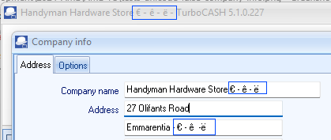
Company info and report Currencies
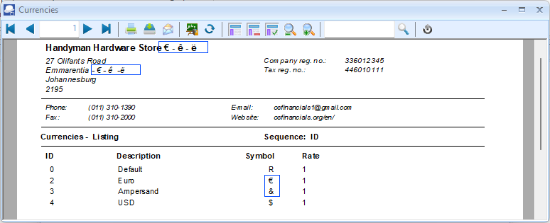
Setup -> Countries
By default, the �land Islands will display the � character irrespective of your Unicode settings if the nounicode=FALSE (for Firebird database type Set of Books) or nounicode=TRUE (for MSSQL database type Set of Books). Åland does not seem to be included in the countries.xml file in the osfinancials5/TurboCASH5 root installation folder.
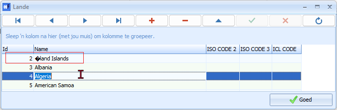
Typing special characters can vary depending on your keyboard and operating system. Here are a few methods for typing the Å character in Windows:
- Using Alt Code:
- Hold down the Alt key.
- While holding down Alt, type 0197 on the numeric keypad.
- Keyboard Shortcuts:
- Ensure you're using a keyboard layout that includes Scandinavian characters (like Swedish or Finnish).
- Press Shift + Ctrl + ; and then A.
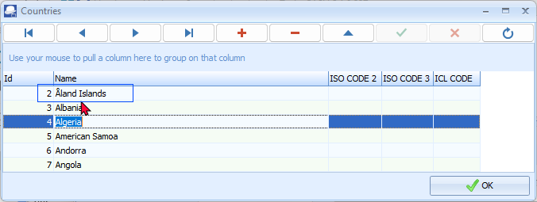
The Åland Islands - This fascinating archipelago belongs to Finland but has a large degree of autonomy. The unique letter “Å” is a telltale sign of the Scandinavian influence.
Errors Firebird database type - nounicode=TRUE
If the Unicode setting is set to nounicode=TRUE and data is entered in forms and screens, it will cause display errors in the forms, reports and layout files.
Some screenshots of incorrect data display.
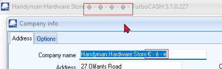
Error in documents, if no items are selected titlebar captions company name displayed incorrectly on all confirmation, warning, error messages across the entire program..
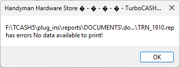
Accounts
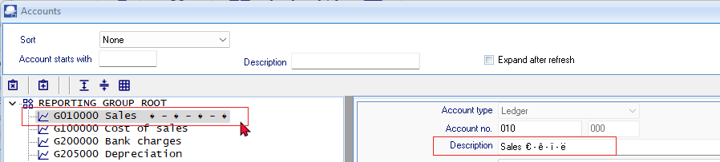
Stock
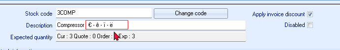
Enter correctly - when saving the record, the characters displays incorrectly on the stock grid.
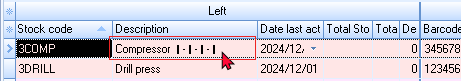
OLDER UNICODE TESTS
Firebird databases nounicode=TRUE
Retested:
All reports seems to print fine and neat.
Display errors when data is entered in some screens and reports
If the nounicode=TRUE setting is set to true - it also produces incorrect display of data in some screens and reports.
Setup Countries - Displays incorrect character " �land Islands "
Replicated in osF5.1.100 since osFinancials5.1.0.16 displayed incorrectly, since unicode was introduced.
If the default setting " nounicode=true " is in the osf.ini file, this replicate the error not displaying correctly.
If the default unicode setting in the osf.ini file is changed to " ;nounicode=true " is uncommented or set to false nounicode=false in the osf.ini file, these settings does not change the display of " �land Islands ".
�land Islands Displays incorrect character irrespective of unicode settings
Setup → Countries
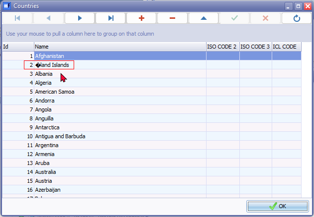
Last version was displaying correctly = Build 453
Currencies
Replicated in osF5.1.100 since osFinancials5.1.0.16 displayed incorrectly, since unicode was introduced.
To use Currencies in osFinancials5 you need to change the osf.ini file
Only works correctly if nounicode=FALSE in the osf.ini file.
If the default setting nounicode=TRUE in the osf.ini file, this replicate the error not displaying correctly.
Default setting nounicode=TRUE in the osf.ini file, this replicate the error not displaying correctly
Euro sign - € - (Alt+0128) Initially it displays correctly, but when the record is saved, it displays a | pipe symbol in the Currency screen.
When printing a report the Euro sign - € id incorrectly displayed as � character.
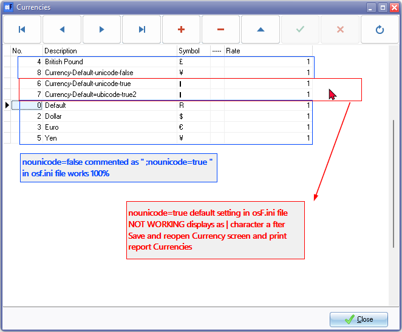
See - Alt Code Shortcuts for Currency Symbols - List of Alt+Numeric keys for generating theCurrencies in the various countries. Example Works if the Alt+0165 for Yen, etc.
To display currencies correctly in Currencies setup and print the Currency report correctly in you need to change the osf.ini file.
nounicode=TRUE setting set it to false nounicode=FALSE in the osf.ini file
After changing it back to the default setting nounicode=FALSE in the osf.ini file, The error is not replicated and is displayed correctly correctly in Setup → Currencies and Reports → Currencies report or on document layout files.
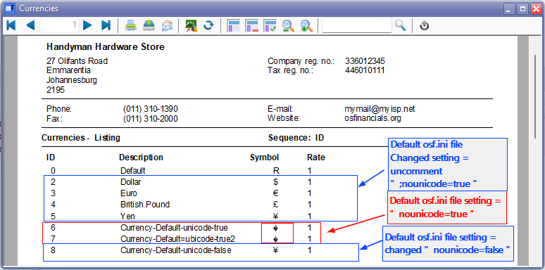
Layout file incorrect
If the default setting nounicode=TRUE in the osf.ini file, this replicate the error not displaying currency symbol correctly.
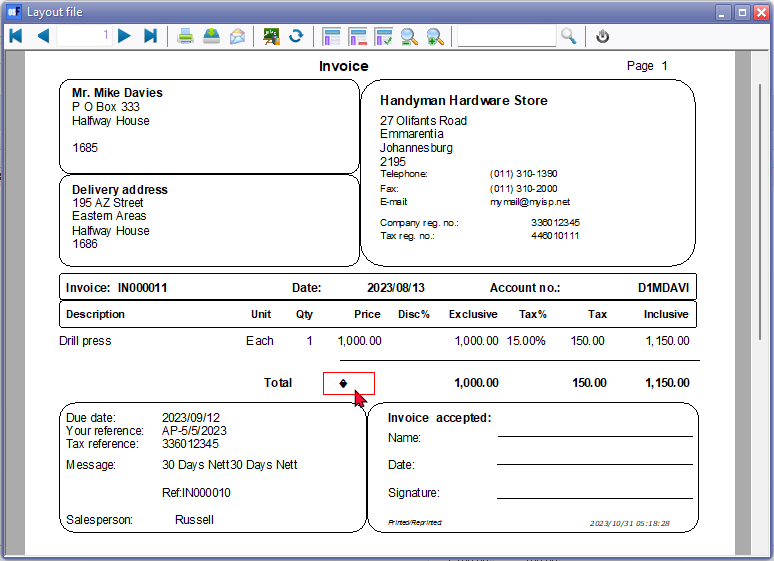
Layout file correct
Only works correctly if nounicode=TRUE is set to false nounicode=FALSE in the osf.ini file.
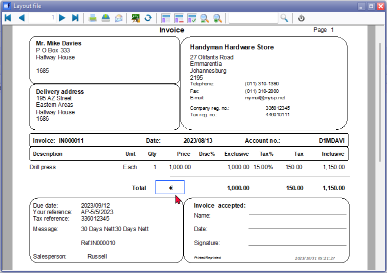
Was correct in osFinancials5 (Build 453)
Plugins Multimedia
Character input ë (Alt+137) displays correctly for added multimedia files in File explorer in the Windows system. When file is added in the Plugins, e.g. Multimedia, the file names displays incorrect characters in the fields loaded in the when nounicode=TRUE
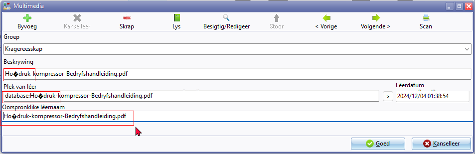
Firebird Database - nounicode=FALSE
If the nounicode=FALSE it does not replicate the errors found in when the nounicode=TRUE
MSSQL databases cannot open in the MSSQL Server. To open and work in MSSQL databases, the Unicode setting must be set to nounicode=TRUE
In Firebird databases the Unicode setting must be set to nounicode=FALSE
Retested:
- Reports : All reports and document layout files including spreadsheet reports print correctly and looks neat.
- Screens : Currencies is fixed but not Countries
- Plugins : Displays correctly
Character input ë (Alt+137) displays correctly for added multimedia files in File explorer in the Windows system. When file is added in the Plugins, e.g. Multimedia, the file names displays correct characters in the fields loaded in the when nounicode=FALSE
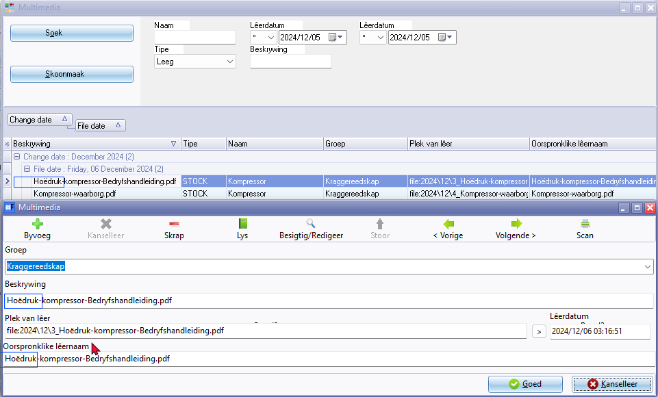